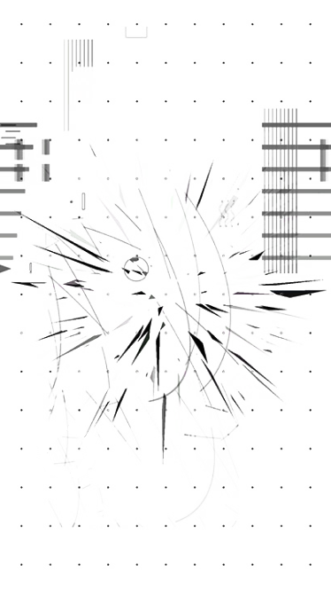
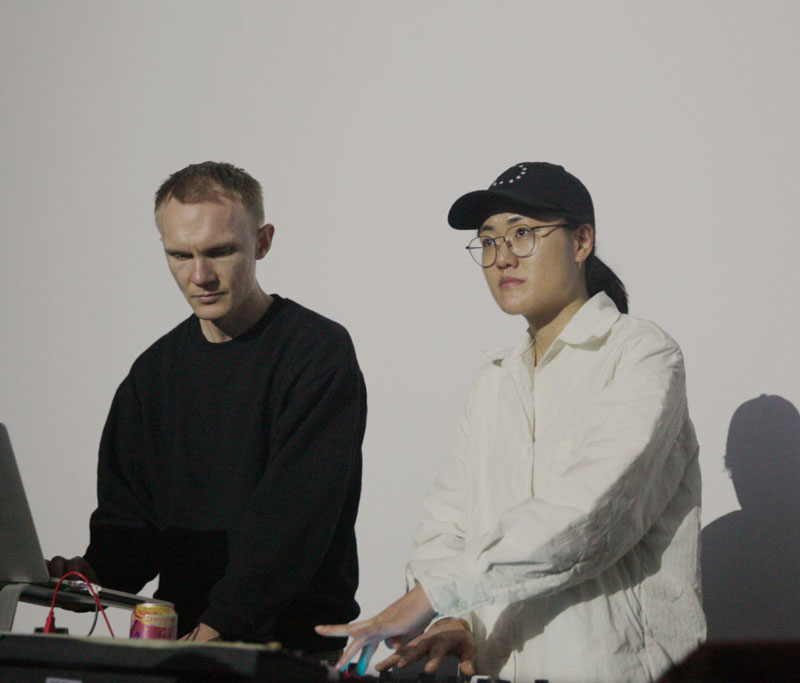

About
Subset (Andreas Brændhaugen and Sarah Nahm) have been creating visuals to live music since the late 2000s. A staple of San Francisco’s underground party circuit, Subset has become the local go-to visuals provider for the techno vanguard – artists like Luke Slater, Drew McDowall, Orphx, Kyoka, Silent Servant, Rrose, Marcel Dettmann, Perc, Hiro Kone, and many more.
Subset’s visuals leap from constrained to anarchic, with brooding compositions made from primitive geometric forms, digital detritus, found footage, and sound reactive structures.



Artists we have performed with
Marcel Dettmann
Luke Slater
Drew McDowall
Skee Mask
Hiro Kone
Rrose
Perc
Aurora Halal
Overmono
Orphx
Surgeon
Kyoka
Silent Servant
Atom™
Pop.1280
SHXCXCHCXSH
Vril
Mike Parker
Kevin Drumm
Freddy K
Randomer
Topazu
Niños du Brasil
Antenes
Cassegrain
Demdike Stare
Tsuzing
Samuel Kerridge
Kit Clayton
CoH
Not Waving
Powell
Black Marble
The Carry Nation
Russell Haswell
Ancient Methods
Cameron Shafii
Rroxymore
Beau Wanzer
Earthen Sea
Headless Horseman
Ron Morelli
Shifted
K-Hand
RP Boo